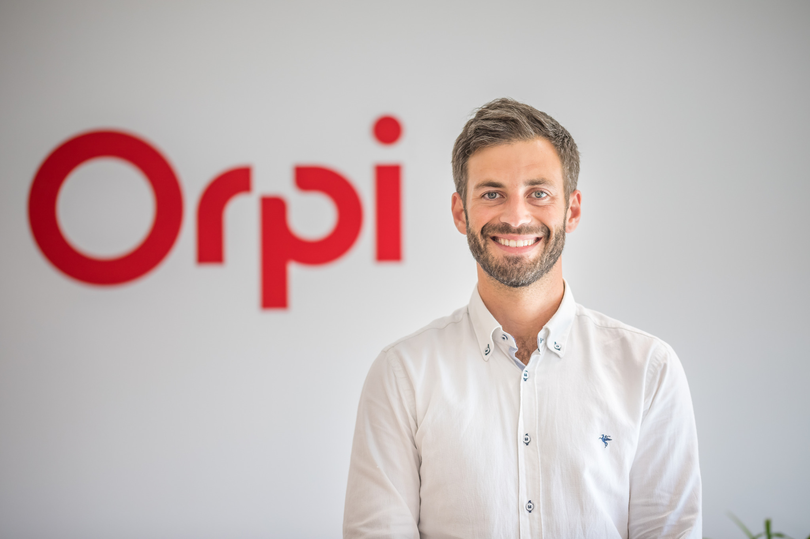
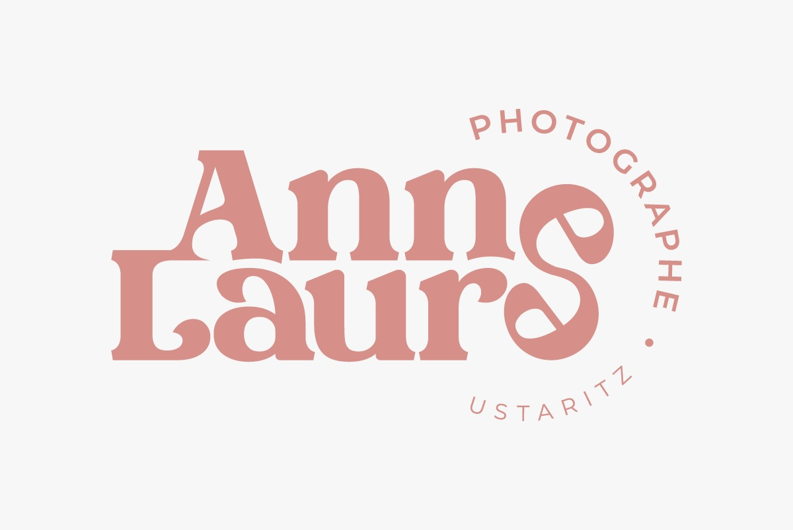
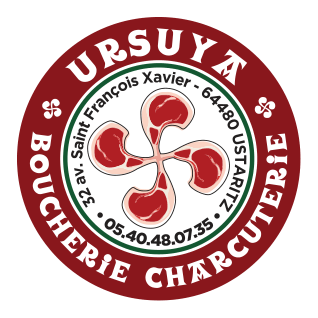

Copywriter à Ustaritz : découvrez Jeff Bond, fondateur de JEGO, spécialiste du copywriting et de la création de sites internet
Agence immobilière à Ustaritz : découvrez Axel Compagnon, directeur de l'agence Orpi Compagnon
Photographe à Ustaritz : découvrez Anne-Laure, plus de 20 ans d'expérience pour immortaliser vos souvenirs
Boucherie à Ustaritz : découvrez Mélanie et Fabien Chatain, les passionnés de la Boucherie Ursuya